SILENT / 40 个页面与关键状态
统一界面系统 · 项目现有资源 · 2026.10.28
UI DESIGN / 2026

01开始菜单

02角色创建

03角色选择

04主城 HUD

05副本与 Boss HUD

06训练场

07操作与职业教学

08背包与装备
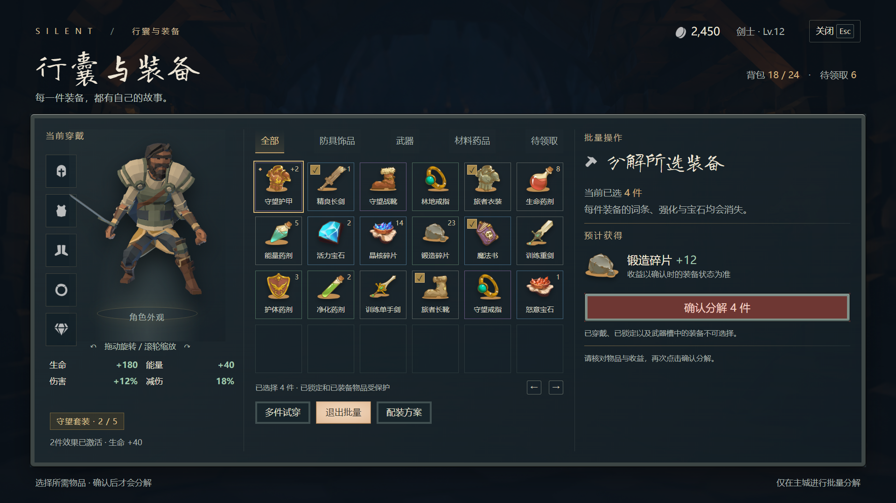
09批量分解
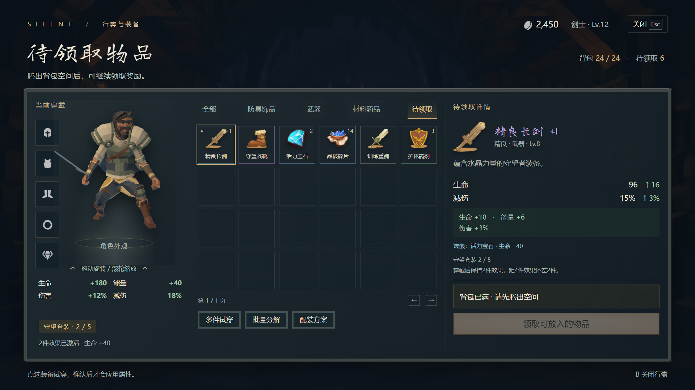
10待领取物品
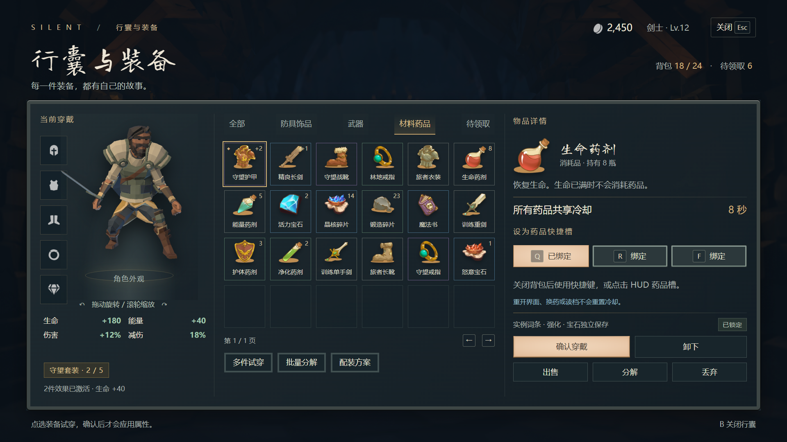
11药品与快捷栏配置
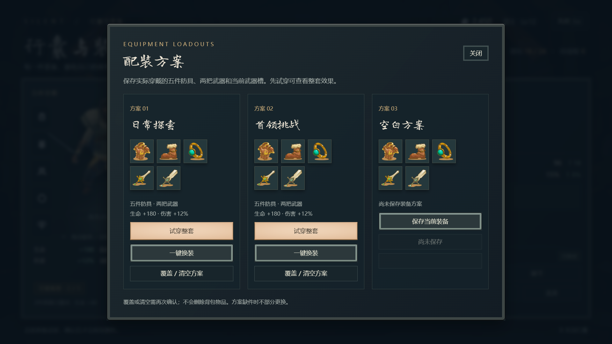
12配装方案
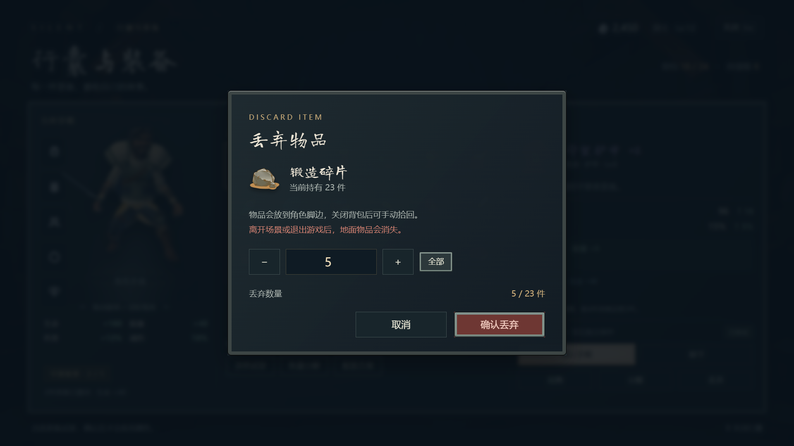
13丢弃数量确认
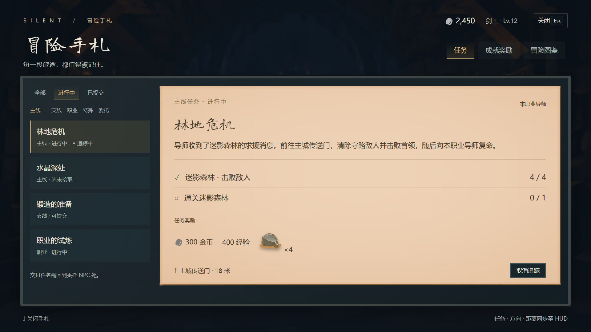
14任务手札
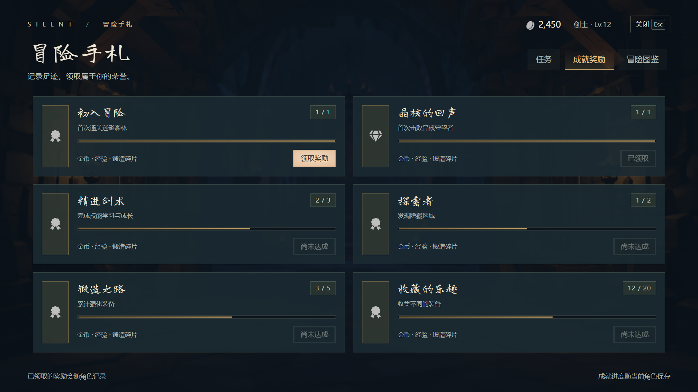
15成就奖励
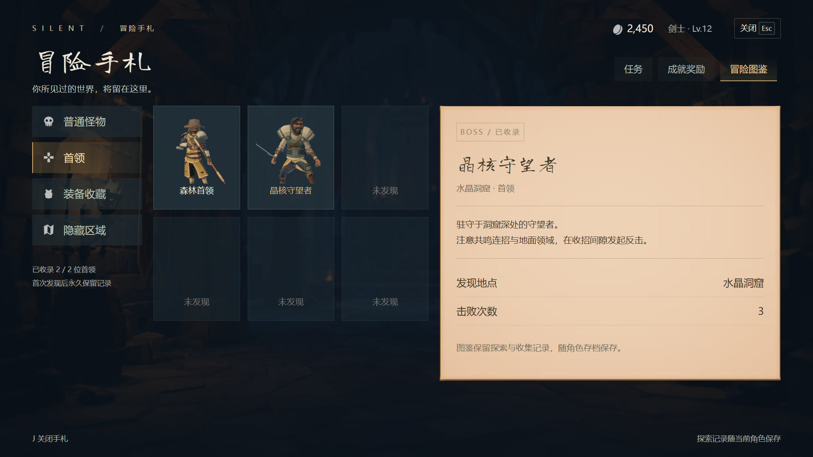
16冒险图鉴
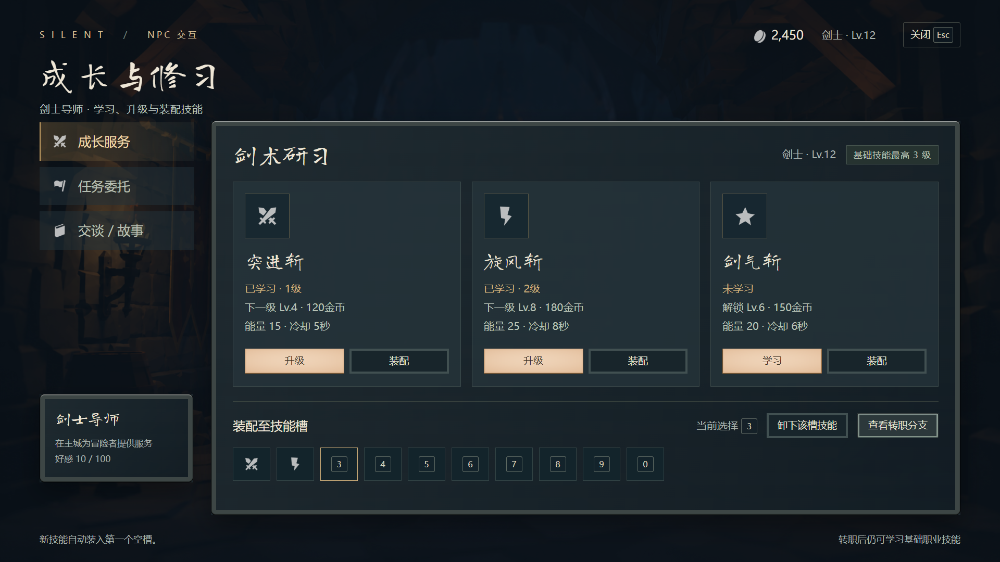
17导师技能服务
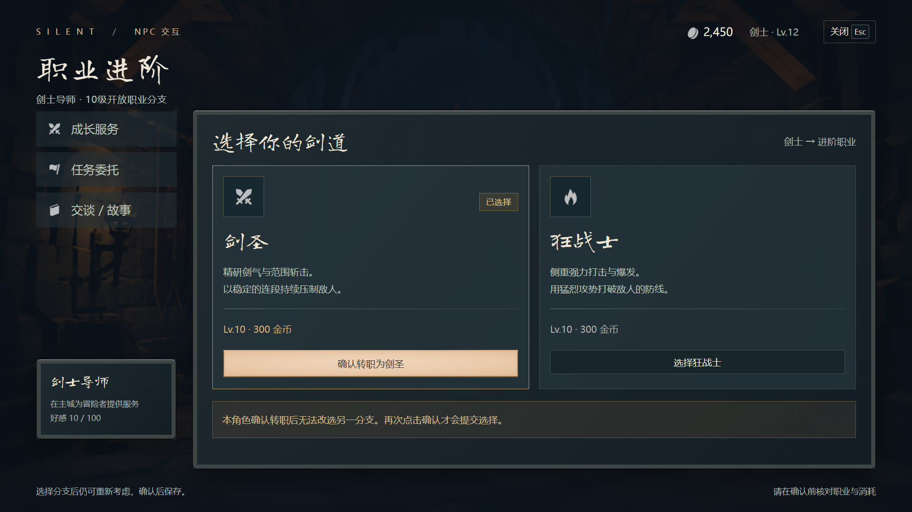
18转职确认
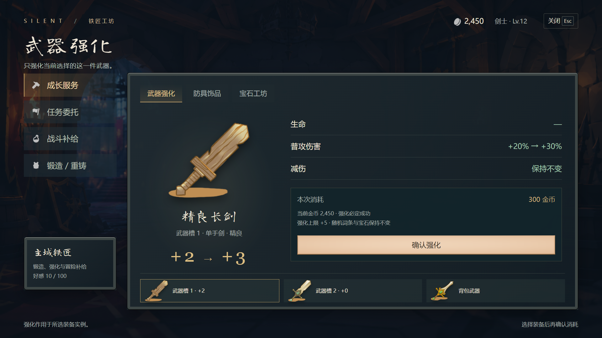
19武器强化
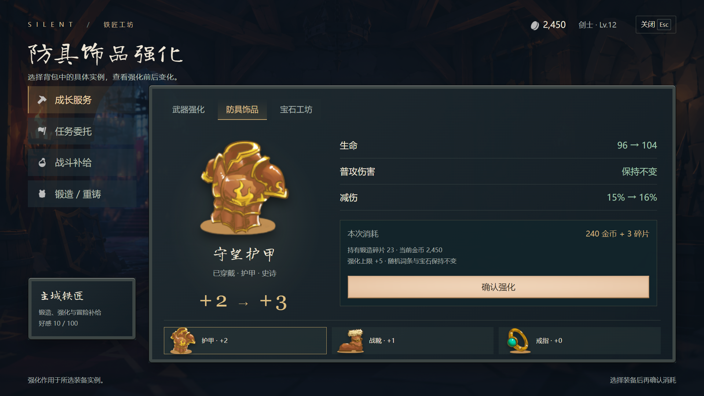
20防具饰品强化
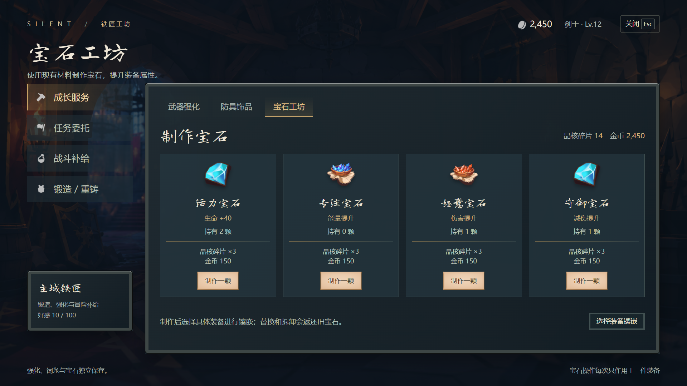
21宝石制作
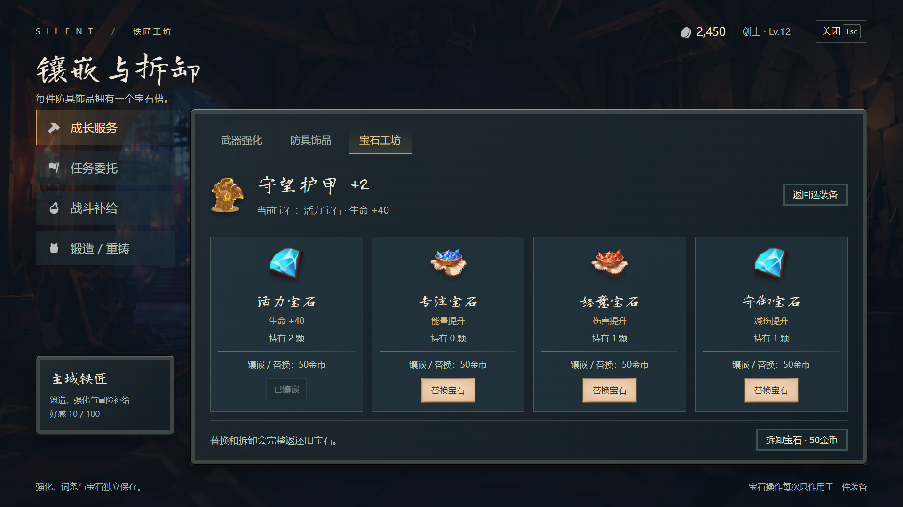
22宝石镶嵌与拆卸
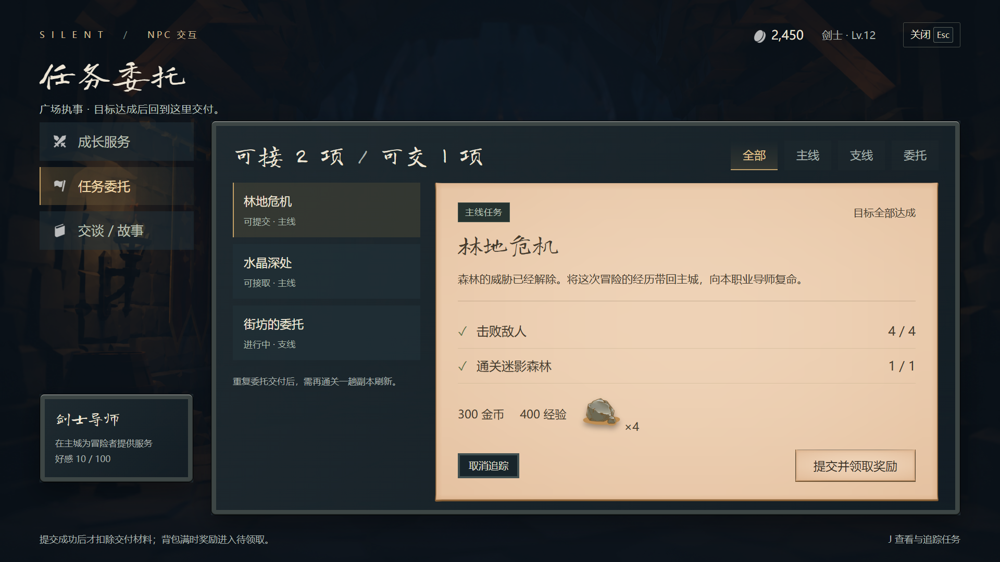
23NPC 任务委托
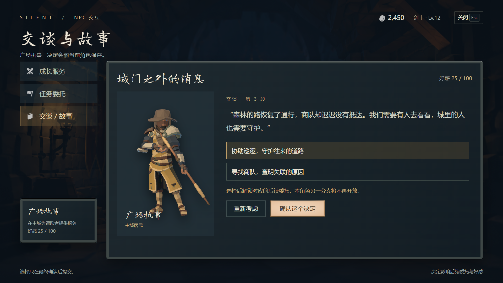
24剧情交谈与选择

25战斗补给商店

26装备配方锻造

27词条重铸确认

28传送 · 迷影森林

29传送 · 水晶洞窟

30传送 · 训练场

31通关结算

32死亡与失败结算

33暂停菜单

34设置 · 屏幕

35设置 · 声音

36设置 · 控制

37设置 · 游戏

38场景加载

39加载失败

40世界标签与即时反馈